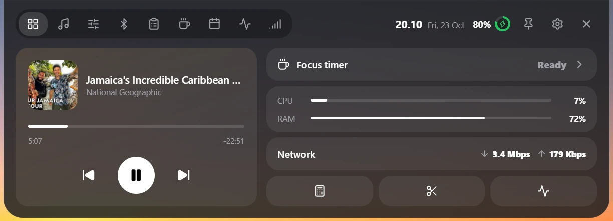
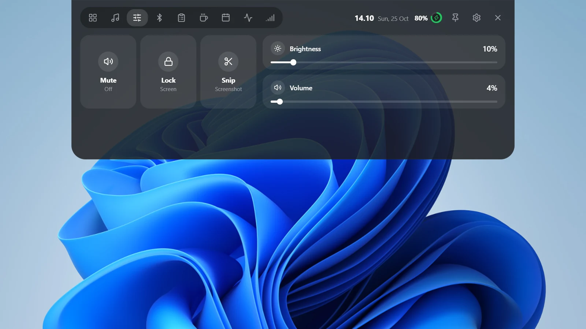
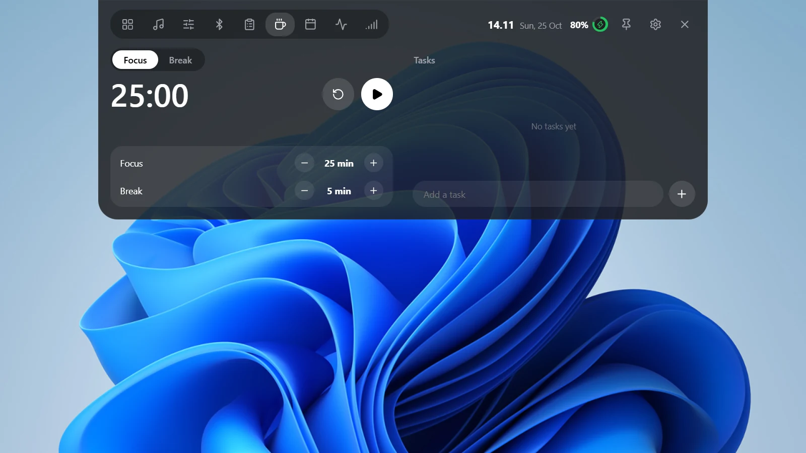
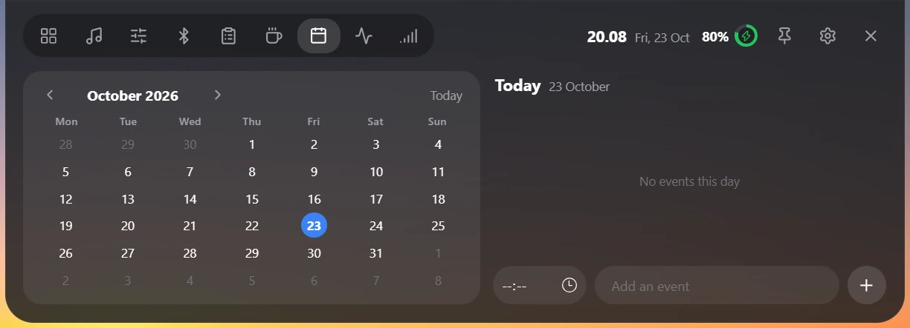
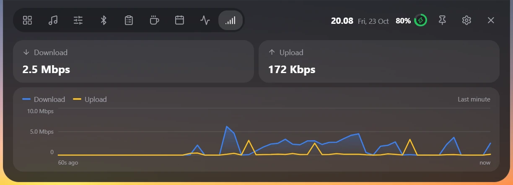
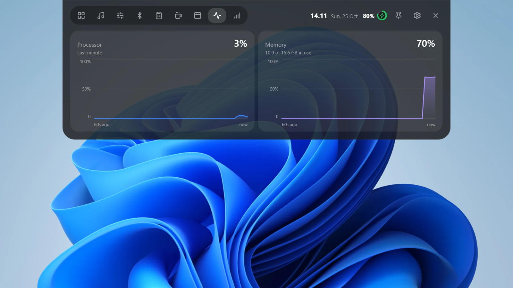
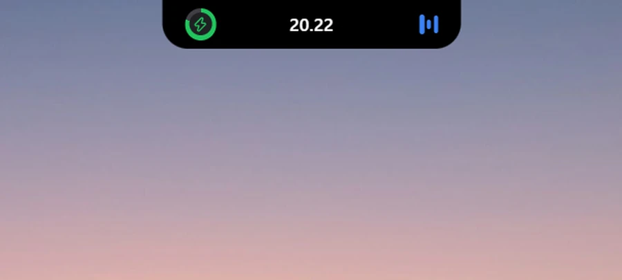
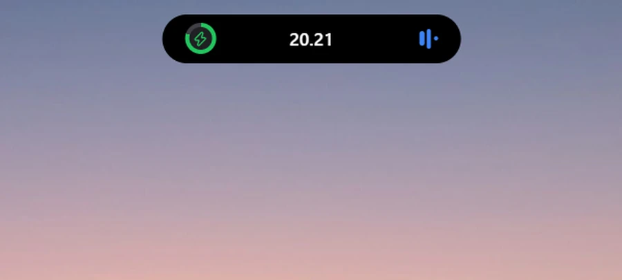
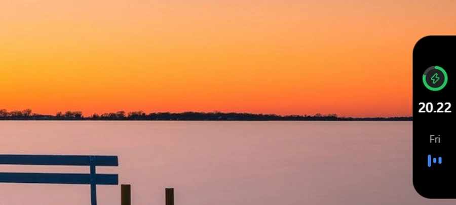

Now playing
Cover art, seek bar and transport controls for whatever is playing in any Windows media app.
Mochi Smart Notch is a Dynamic Island-style notch for Windows. Dock it to any edge and control media, devices, focus and more without leaving your work.

Nine tabs that open on hover and get out of the way when you move on.
Cover art, seek bar and transport controls for whatever is playing in any Windows media app.
Volume, brightness, mute and one-click shortcuts to the calculator, snipping tool and lock screen.
Turn the radio on or off, connect paired devices, scan for nearby ones and pair them from the notch.
Everything you copied, one click to copy it again. History stays on your PC.
A timer in one-minute steps with a task list beside it. The running timer shows in the collapsed notch.
Your Windows calendar appointments plus your own events, laid out by day.
Live line charts in Mbps and percent, so you can see what is using your machine right now.
Pick a theme, add effects like aurora, and tune the look from the settings window.
Lives in the tray with Settings and Exit. Choose at install time whether it starts with Windows.
Real screenshots, taken from the app running on Windows 11.





Drag the notch to any edge of any display. Snap points keep it tidy, and it expands into whatever space is available.



The notch reads what it needs to show you, and nothing leaves your PC. Read the full privacy policy.
Tasks, events, clipboard history and settings live in a local database on your machine. It is not encrypted, so treat the PC accordingly.
Nothing to sign in to and nothing that reports back. The app does not send your data anywhere.
Every release lists the SHA-256 of the installer. Check it with Get-FileHash before you run it.